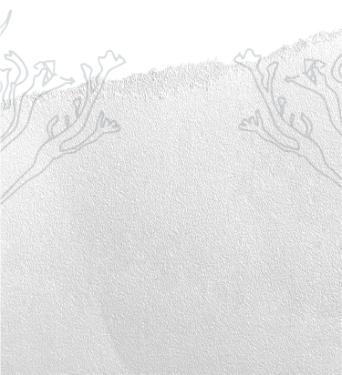

Voor deze opdracht wandelen we door de straten van Amsterdam om op zoek te gaan naar groene initiatieven.
Daarom vond ik het erg leuk om de Zeewier Winkel te ontdekken. Misschien ken je de Dutch Weed burger, die vaak op festivals te vinden is. Daarom vond ik het ook heel interessant om te ontdekken wat je met zeewier kunt doen, afgezien van het maken van een burger!